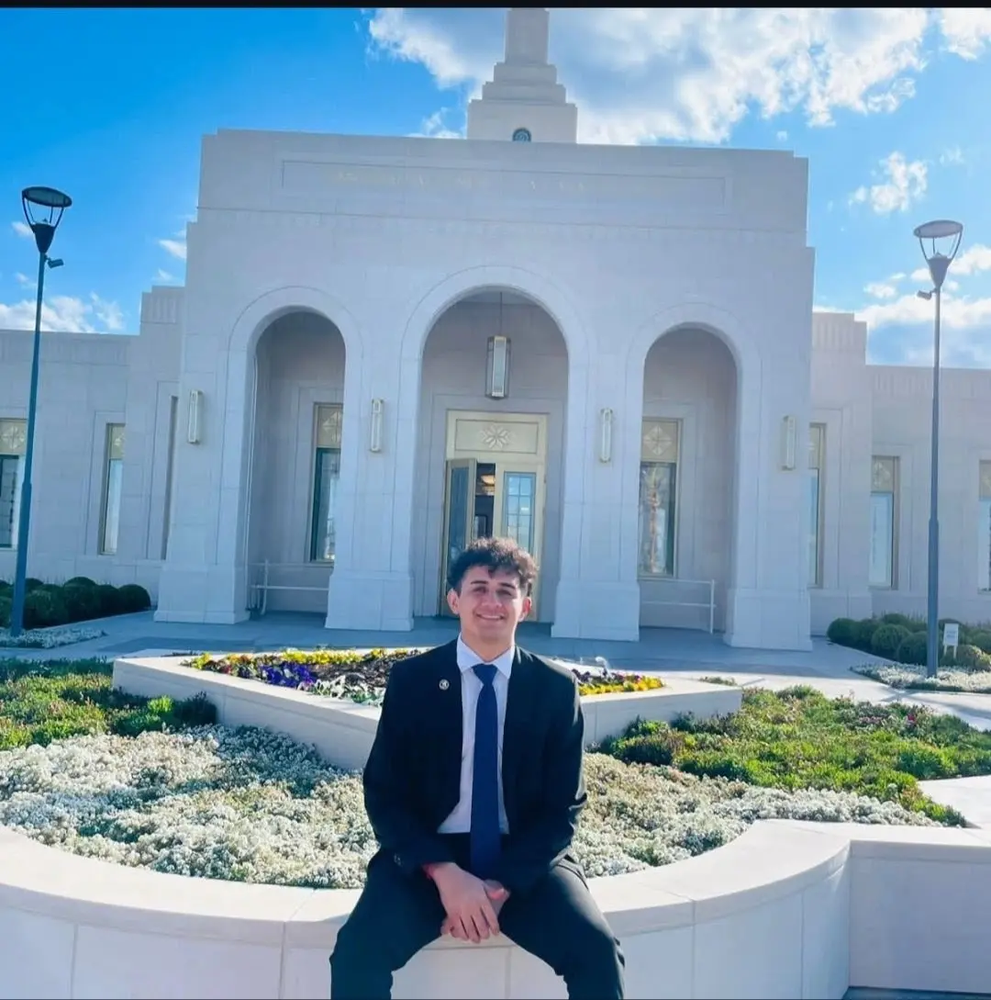

Franco Joaquin Narvaez | WDD 130
Hi there! My name is Franco Joaquin Narvaez, and I am excited to be part of the WDD130 course. I have a passion for web development and look forward to learning new skills and techniques throughout this course. In my free time, I enjoy exploring new technologies, working on personal projects, and i would like to connect with fellow developers. Let's embark on this learning journey together!